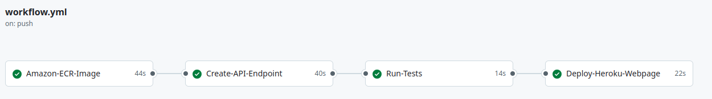
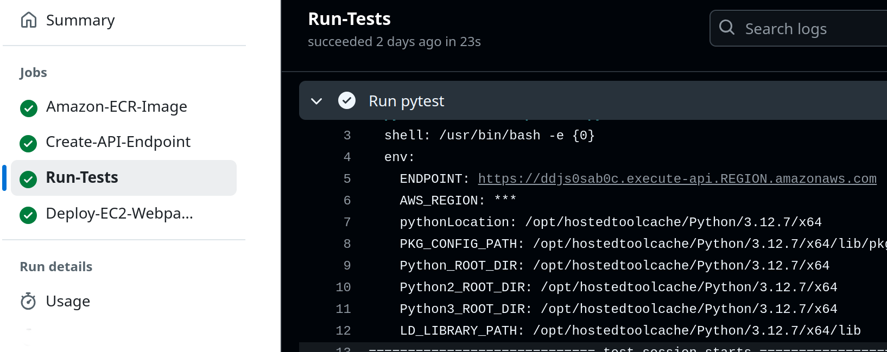

Steps for deploying
It is necessary the following steps:
For deploying the model do a git push to the main. Go to the section Actions in the repository to see all the details from the workflow

The API Endpoint can be found in:

The Github action also contains a job for testing the API with an Image of a car and it label.

After deploying you might want to see the logs from the lambda function. To do that, use the script “logs/see_logs_lambda.py”
python3 logs/see_logs_lambda.py --lambda_name <lambda function name>